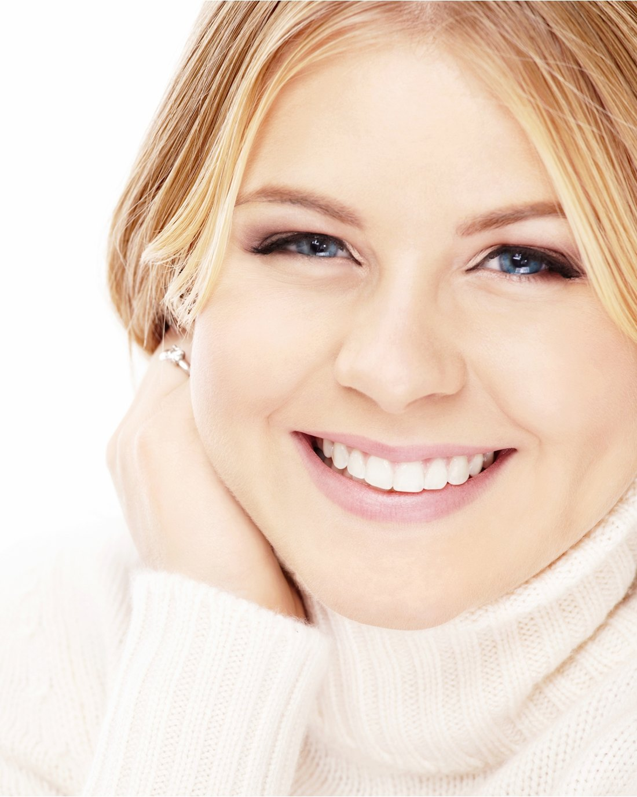
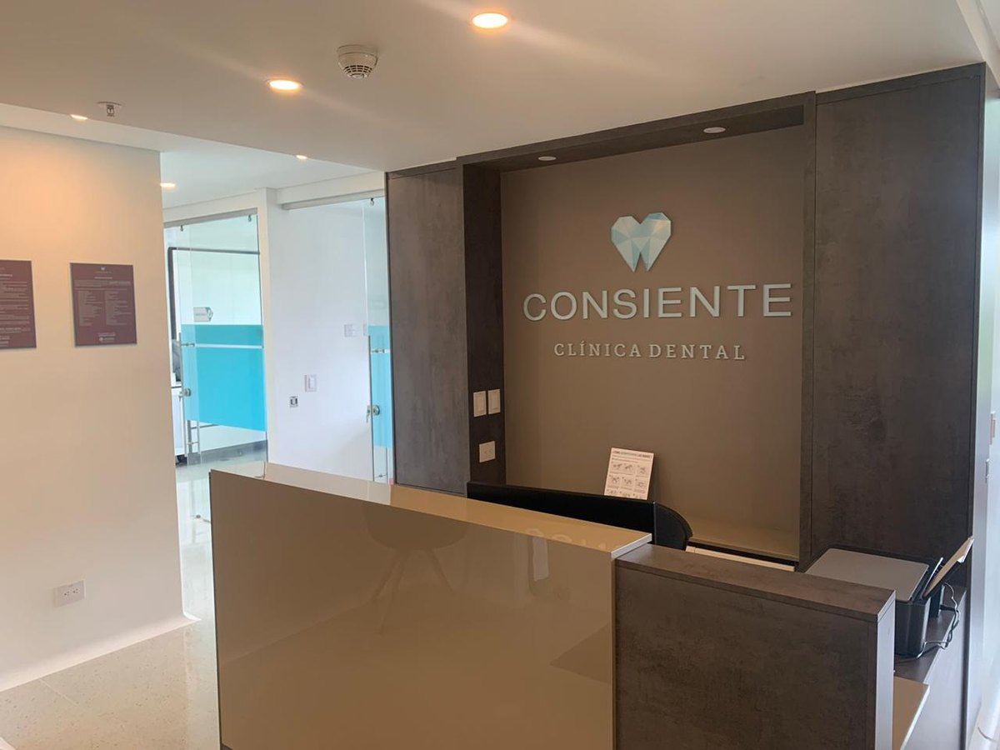

Clínica dental especializada en Rionegro. 13 profesionales en rehabilitación oral, periodoncia, cirugía maxilofacial, ortodoncia, endodoncia, odontología general y odontopediatría. Tecnología avanzada y trato cálido en City Médica, torre 2.


En Consiente cuidamos su sonrisa con un equipo de profesionales expertos en las siete áreas clave de la odontología moderna. Trabajamos con tecnología de punta, scanner intraoral para impresiones digitales y microscopio para tratamientos predecibles.
Nuestro consultorio está en el complejo City Médica de Rionegro, en la torre 2, consultorio 405. Un espacio diseñado para que cada paciente se sienta acompañado, escuchado y bien tratado en cada visita.
Conozca másEquipo completo: rehabilitación oral, periodoncia, cirugía maxilofacial, ortodoncia, endodoncia, odontología general y odontopediatría.
Scanner intraoral para impresiones digitales, microscopio para endodoncia y técnicas Invisalign con planeación por computador.
Asesoría individual con el especialista indicado. Tratamientos estéticos, mínimamente invasivos y con los mejores materiales del mercado.
SIETE ESPECIALIDADES EN UN SOLO CONSULTORIO
Recupere su sonrisa con carillas, coronas, resinas o implantes. Especialistas que ofrecen las alternativas más estéticas y menos invasivas, con los mejores materiales y tecnología de avanzada.
Cuidado y tratamiento de encías y hueso. Si fuma o tiene diabetes, tiene cuatro veces más riesgo de enfermedad periodontal. Nuestros especialistas previenen y tratan gingivitis, periodontitis y restauran tejido perdido.
Cirugía de maxilares, procedimientos estéticos faciales e implantes dentales. Asesoría personalizada para encontrar la mejor opción según su caso particular.
Para todas las edades. Brackets de alta tecnología y técnicas Invisalign sin brackets con planeación digital por computador. Mejoramos la estética, la mordida y la función masticatoria.
Tratamiento de conductos para dolor dental, sensibilidad al frío o calor y dolor al masticar. Usamos microscopio para realizar el procedimiento de forma más predecible y segura.
Prevención, salud y estética en una sola visita. Materiales de alta tecnología y los más estéticos del mercado para mejorar su sonrisa y prevenir enfermedades.
Consentimos a sus hijos. Odontopediatras expertos en el manejo de niños y adolescentes, en cuidado oral preventivo y en formar buenos hábitos para toda la vida.
13 profesionales especializados en las siete áreas clave de la odontología moderna. Cada uno con formación postgradual y años de experiencia clínica.
Carrera 55A # 35-227
Complejo City Médica · Torre 2, consultorio 405
Rionegro, Antioquia
"Agradezco a Consiente Clínica Dental por cambiar la forma como he vivido la odontología. Manos suaves y amor en cada trato."
"Desde que conozco a la Dra. Paola en Consiente, me siento feliz de poder ser atendido con amor."
"Gracias por consentirme tanto y haberme devuelto la sonrisa."
Pida su cita con el especialista indicado para su caso. Le atendemos en City Médica, torre 2 consultorio 405, Rionegro.